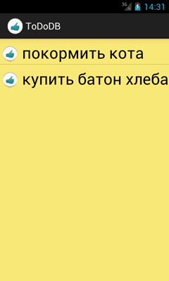
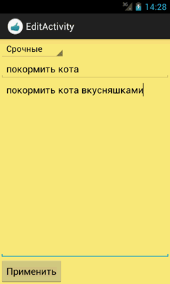

/* Моя кошка замечательно разбирается в программировании. Стоит мне объяснить проблему ей - и все становится ясно. */
John Robbins, Debugging Applications, Microsoft Press, 2000

/* Моя кошка замечательно разбирается в программировании. Стоит мне объяснить проблему ей - и все становится ясно. */
John Robbins, Debugging Applications, Microsoft Press, 2000
Напишем приложение «Список дел», при помощи которого пользователь можете заносить в список важные дела, которые нельзя забыть - купить батон хлеба, накормить кота, поздравить жену. Данные события будем сохранять в базе данных.
Логика программы проста - на основном экране приложения выводится список дел, а на втором происходит добавление нового события.
Создадим новый проект и сначала займемся классом, работающим с базой данных. В базе будет одна таблица с четырьмя колонками. А также добавим методы для управления данными - добавление, удаление, редактирование.
package ru.alexanderklimov.todoold;
import android.content.ContentValues;
import android.content.Context;
import android.database.Cursor;
import android.database.SQLException;
import android.database.sqlite.SQLiteDatabase;
import android.database.sqlite.SQLiteOpenHelper;
import android.util.Log;
public class ToDoDatabase extends SQLiteOpenHelper {
private static final String DATABASE_NAME = "todo_app.db";
private static final int DATABASE_VERSION = 1;
private static final String DATABASE_TABLE = "todos";
// поля таблицы
public static final String COLUMN_ID = "_id";
public static final String COLUMN_CATEGORY = "category";
public static final String COLUMN_SUMMARY = "summary";
public static final String COLUMN_DESCRIPTION = "description";
// запрос на создание базы данных
private static final String DATABASE_CREATE = "create table "
+ DATABASE_TABLE + "(" + COLUMN_ID
+ " integer primary key autoincrement, " + COLUMN_CATEGORY
+ " text not null, " + COLUMN_SUMMARY + " text not null,"
+ COLUMN_DESCRIPTION + " text not null" + ");";
public ToDoDatabase(Context context) {
super(context, DATABASE_NAME, null, DATABASE_VERSION);
}
@Override
public void onCreate(SQLiteDatabase db) {
// TODO Auto-generated method stub
db.execSQL(DATABASE_CREATE);
}
@Override
public void onUpgrade(SQLiteDatabase db, int oldVersion, int newVersion) {
// TODO Auto-generated method stub
Log.w(ToDoDatabase.class.getName(), "Upgrading database from version "
+ oldVersion + " to " + newVersion
+ ", which will destroy all old data");
db.execSQL("DROP TABLE IF EXISTS todos");
onCreate(db);
}
/**
* Создаёт новый элемент списка дел. Если создан успешно - возвращается
* номер строки rowId, иначе -1
*/
public long createNewTodo(String category, String summary,
String description) {
SQLiteDatabase db = this.getWritableDatabase();
ContentValues initialValues = createContentValues(category, summary,
description);
long row = db.insert(DATABASE_TABLE, null, initialValues);
db.close();
return row;
}
/**
* Обновляет список
*/
public boolean updateTodo(long rowId, String category, String summary,
String description) {
SQLiteDatabase db = this.getWritableDatabase();
ContentValues updateValues = createContentValues(category, summary,
description);
return db.update(DATABASE_TABLE, updateValues, COLUMN_ID + "=" + rowId,
null) > 0;
}
/**
* Удаляет элемент списка
*/
public void deleteTodo(long rowId) {
SQLiteDatabase db = this.getWritableDatabase();
db.delete(DATABASE_TABLE, COLUMN_ID + "=" + rowId, null);
db.close();
}
/**
* Возвращает курсор со всеми элементами списка дел
*
* @return курсор с результатами всех записей
*/
public Cursor getAllTodos() {
SQLiteDatabase db = this.getWritableDatabase();
return db.query(DATABASE_TABLE, new String[] { COLUMN_ID,
COLUMN_CATEGORY, COLUMN_SUMMARY, COLUMN_DESCRIPTION }, null,
null, null, null, null);
}
/**
* Возвращает курсор с указанной записи
*/
public Cursor getTodo(long rowId) throws SQLException {
SQLiteDatabase db = this.getReadableDatabase();
Cursor mCursor = db.query(true, DATABASE_TABLE,
new String[] { COLUMN_ID, COLUMN_CATEGORY, COLUMN_SUMMARY,
COLUMN_DESCRIPTION }, COLUMN_ID + "=" + rowId, null,
null, null, null, null);
if (mCursor != null) {
mCursor.moveToFirst();
}
return mCursor;
}
/*
* Создаёт пару ключ-значение и записывает в базу
*/
private ContentValues createContentValues(String category, String summary,
String description) {
ContentValues values = new ContentValues();
values.put(COLUMN_CATEGORY, category);
values.put(COLUMN_SUMMARY, summary);
values.put(COLUMN_DESCRIPTION, description);
return values;
}
}
Займёмся основной активностью. Добавим элемент меню в res/menu/main.xml с текстом Добавить. Через этот пункт мы будем переходить на вторую активность, в которой можно будет добавить новую задачу:
<menu xmlns:android="http://schemas.android.com/apk/res/android" >
<item
android:id="@+id/action_settings"
android:orderInCategory="100"
android:showAsAction="never"
android:title="@string/action_settings"/>
<item
android:id="@+id/insert"
android:title="Добавить">
</item>
</menu>
Добавим несколько строковых ресурсов в res/values/strings.xml:
<?xml version="1.0" encoding="utf-8"?>
<resources>
<string name="app_name">ToDoDB</string>
<string name="action_settings">Settings</string>
<string name="hello_world">Hello world!</string>
<string-array name="priorities">
<item>Срочные</item>
<item>Напомнить</item>
</string-array>
<string name="no_todos">Нет текущих задач</string>
<string name="menu_insert">Добавить</string>
<string name="menu_delete">Удалить</string>
<string name="todo_summary">Кратко</string>
<string name="todo_description">Описание</string>
<string name="todo_confirm">Применить</string>
<color name="listcolor">#FFE87C</color>
<color name="black">#000000</color>
</resources>
Разметка для основной активности (список и текстовая метка, когда список пуст):
<?xml version="1.0" encoding="utf-8"?>
<LinearLayout xmlns:android="http://schemas.android.com/apk/res/android"
android:layout_width="fill_parent"
android:layout_height="fill_parent"
android:background="@color/listcolor"
android:orientation="vertical" >
<ListView
android:id="@android:id/list"
android:layout_width="wrap_content"
android:layout_height="wrap_content" >
</ListView>
<TextView
android:id="@android:id/empty"
android:layout_width="wrap_content"
android:layout_height="wrap_content"
android:text="@string/no_todos" />
</LinearLayout>
Создадим разметку для отдельного элемента списка (list_row.xml):
<?xml version="1.0" encoding="utf-8"?>
<LinearLayout xmlns:android="http://schemas.android.com/apk/res/android"
android:layout_width="fill_parent"
android:layout_height="wrap_content" >
<ImageView
android:id="@+id/icon"
android:layout_width="30dp"
android:layout_height="40dp"
android:layout_marginLeft="4dp"
android:layout_marginRight="8dp"
android:layout_marginTop="8dp"
android:src="@drawable/ic_launcher" >
</ImageView>
<TextView
android:id="@+id/label"
android:layout_width="fill_parent"
android:layout_height="wrap_content"
android:layout_marginTop="6dp"
android:text=""
android:textColor="@color/black"
android:textSize="30sp" >
</TextView>
</LinearLayout>
Создадим вторую активность EditActivity, в которой будет происходить добавление новой задачи. Разметка для этой активности
<?xml version="1.0" encoding="utf-8"?>
<LinearLayout xmlns:android="http://schemas.android.com/apk/res/android"
android:layout_width="fill_parent"
android:layout_height="fill_parent"
android:background="@color/listcolor"
android:orientation="vertical" >
<Spinner
android:id="@+id/category"
android:layout_width="wrap_content"
android:layout_height="wrap_content"
android:entries="@array/priorities" >
</Spinner>
<LinearLayout
android:id="@+id/LinearLayout01"
android:layout_width="fill_parent"
android:layout_height="wrap_content" >
<EditText
android:id="@+id/todo_edit_summary"
android:layout_width="wrap_content"
android:layout_height="wrap_content"
android:layout_weight="1"
android:hint="Кратко" >
</EditText>
</LinearLayout>
<EditText
android:id="@+id/todo_edit_description"
android:layout_width="fill_parent"
android:layout_height="fill_parent"
android:layout_weight="1"
android:gravity="top"
android:hint="Описание" >
</EditText>
<Button
android:id="@+id/todo_edit_button"
android:layout_width="wrap_content"
android:layout_height="wrap_content"
android:text="@string/todo_confirm" >
</Button>
</LinearLayout>
Переходим к написанию кода. Сначала код для основной активности.
package ru.alexanderklimov.todoold;
import android.os.Bundle;
import android.app.ListActivity;
import android.content.Intent;
import android.database.Cursor;
import android.view.ContextMenu;
import android.view.ContextMenu.ContextMenuInfo;
import android.view.Menu;
import android.view.MenuItem;
import android.view.View;
import android.widget.AdapterView.AdapterContextMenuInfo;
import android.widget.ListView;
import android.widget.SimpleCursorAdapter;
public class MainActivity extends ListActivity {
private ToDoDatabase dbHelper;
private static final int ACTIVITY_CREATE = 0;
private static final int ACTIVITY_EDIT = 1;
private static final int DELETE_ID = Menu.FIRST + 1;
private Cursor cursor;
@Override
protected void onCreate(Bundle savedInstanceState) {
super.onCreate(savedInstanceState);
// setContentView(R.layout.activity_main);
setContentView(R.layout.activity_main);
this.getListView().setDividerHeight(2);
dbHelper = new ToDoDatabase(this);
fillData();
registerForContextMenu(getListView());
}
@Override
public boolean onCreateOptionsMenu(Menu menu) {
// Inflate the menu; this adds items to the action bar if it is present.
getMenuInflater().inflate(R.menu.main, menu);
return true;
}
// Реакция на выбор меню
@Override
public boolean onMenuItemSelected(int featureId, MenuItem item) {
switch (item.getItemId()) {
case R.id.insert:
createNewTask();
return true;
}
return super.onMenuItemSelected(featureId, item);
}
@Override
public boolean onOptionsItemSelected(MenuItem item) {
switch (item.getItemId()) {
case R.id.insert:
createNewTask();
return true;
}
return super.onOptionsItemSelected(item);
}
@Override
public boolean onContextItemSelected(MenuItem item) {
switch (item.getItemId()) {
case DELETE_ID:
AdapterContextMenuInfo info = (AdapterContextMenuInfo) item
.getMenuInfo();
dbHelper.deleteTodo(info.id);
fillData();
return true;
}
return super.onContextItemSelected(item);
}
private void createNewTask() {
Intent intent = new Intent(this, EditActivity.class);
startActivityForResult(intent, ACTIVITY_CREATE);
}
private void fillData() {
cursor = dbHelper.getAllTodos();
startManagingCursor(cursor);
String[] from = new String[] { ToDoDatabase.COLUMN_SUMMARY };
int[] to = new int[] { R.id.label };
// Теперь создадим адаптер массива и установим его для отображения наших
// данных
SimpleCursorAdapter notes = new SimpleCursorAdapter(this,
R.layout.list_row, cursor, from, to);
setListAdapter(notes);
}
@Override
protected void onListItemClick(ListView l, View v, int position, long id) {
super.onListItemClick(l, v, position, id);
Intent intent = new Intent(this, EditActivity.class);
intent.putExtra(ToDoDatabase.COLUMN_ID, id);
// активити вернет результат если будет вызвано с помощью этого метода
startActivityForResult(intent, ACTIVITY_EDIT);
}
@Override
protected void onActivityResult(int requestCode, int resultCode,
Intent intent) {
super.onActivityResult(requestCode, resultCode, intent);
if (resultCode == RESULT_OK) {
fillData();
}
}
@Override
public void onCreateContextMenu(ContextMenu menu, View v,
ContextMenuInfo menuInfo) {
super.onCreateContextMenu(menu, v, menuInfo);
menu.add(0, DELETE_ID, 0, R.string.menu_delete);
}
@Override
protected void onDestroy() {
super.onDestroy();
if (dbHelper != null) {
dbHelper.close();
}
}
}
Осталось написать код для второй активности:
package ru.alexanderklimov.todoold;
import android.os.Bundle;
import android.app.Activity;
import android.database.Cursor;
import android.text.TextUtils;
import android.util.Log;
import android.view.View;
import android.widget.Button;
import android.widget.EditText;
import android.widget.Spinner;
import android.widget.Toast;
public class EditActivity extends Activity {
private EditText mTitleText;
private EditText mBodyText;
private Long mRowId;
private ToDoDatabase mDbHelper;
private Spinner mCategory;
@Override
protected void onCreate(Bundle savedInstanceState) {
super.onCreate(savedInstanceState);
mDbHelper = new ToDoDatabase(this);
setContentView(R.layout.activity_edit);
mCategory = (Spinner) findViewById(R.id.category);
mTitleText = (EditText) findViewById(R.id.todo_edit_summary);
mBodyText = (EditText) findViewById(R.id.todo_edit_description);
Button confirmButton = (Button) findViewById(R.id.todo_edit_button);
mRowId = null;
Bundle extras = getIntent().getExtras();
mRowId = (savedInstanceState == null) ? null
: (Long) savedInstanceState
.getSerializable(ToDoDatabase.COLUMN_ID);
if (extras != null) {
mRowId = extras.getLong(ToDoDatabase.COLUMN_ID);
}
populateFields();
confirmButton.setOnClickListener(new View.OnClickListener() {
public void onClick(View view) {
if (TextUtils.isEmpty(mTitleText.getText().toString())) {
Toast.makeText(EditActivity.this, "Данные не введены",
Toast.LENGTH_LONG).show();
} else {
saveState();
setResult(RESULT_OK);
finish();
}
}
});
}
private void populateFields() {
if (mRowId != null) {
Cursor todo = mDbHelper.getTodo(mRowId);
startManagingCursor(todo);
String category = todo.getString(todo
.getColumnIndexOrThrow(ToDoDatabase.COLUMN_CATEGORY));
for (int i = 0; i < mCategory.getCount(); i++) {
String s = (String) mCategory.getItemAtPosition(i);
Log.e(null, s + " " + category);
if (s.equalsIgnoreCase(category)) {
mCategory.setSelection(i);
}
}
mTitleText.setText(todo.getString(todo
.getColumnIndexOrThrow(ToDoDatabase.COLUMN_SUMMARY)));
mBodyText.setText(todo.getString(todo
.getColumnIndexOrThrow(ToDoDatabase.COLUMN_DESCRIPTION)));
todo.close();
}
}
@Override
protected void onSaveInstanceState(Bundle outState) {
super.onSaveInstanceState(outState);
//saveState();
//outState.putSerializable(ToDoDatabase.COLUMN_ID, mRowId);
}
@Override
protected void onPause() {
super.onPause();
//saveState();
}
@Override
protected void onResume() {
super.onResume();
populateFields();
}
private void saveState() {
String category = (String) mCategory.getSelectedItem();
String summary = mTitleText.getText().toString();
String description = mBodyText.getText().toString();
if (description.length() == 0 && summary.length() == 0) {
return;
}
if (mRowId == null) {
long id = mDbHelper.createNewTodo(category, summary, description);
if (id > 0) {
mRowId = id;
}
} else {
mDbHelper.updateTodo(mRowId, category, summary, description);
}
}
}
Запускаем проект и тестируем.
 
Если нужно удалить задачу из списка, то вызовите контекстное меню долгим нажатием и выберите пункт Удалить.
Вы заметили, что в проекте появились зачёркнутые строчки кода у метода startManagingCursor() и конструктора SimpleCursorAdapter, которые говорят, что эти конструкции устарели.
Примечание: В своё время я изучал этот пример, который попался на каком-то сайте. Позже я обнаружил, что на самом деле существует оригинал примера на известном ресурсе. Кстати, сейчас у автора примера проект переделан под новую платформу Android 4 с использованием контент-провайдера. Позже мы дважды переделаем пример. Сначала избавимся от устаревших конструкций, а потом задействуем контент-провайдер.